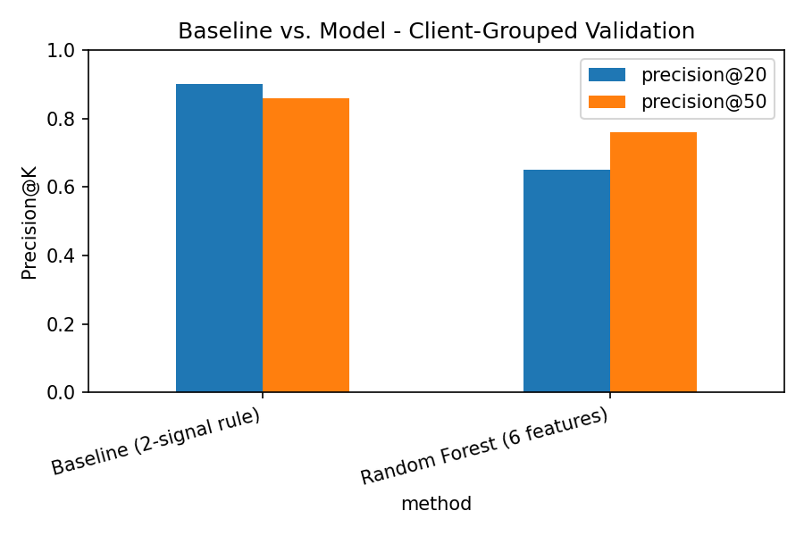
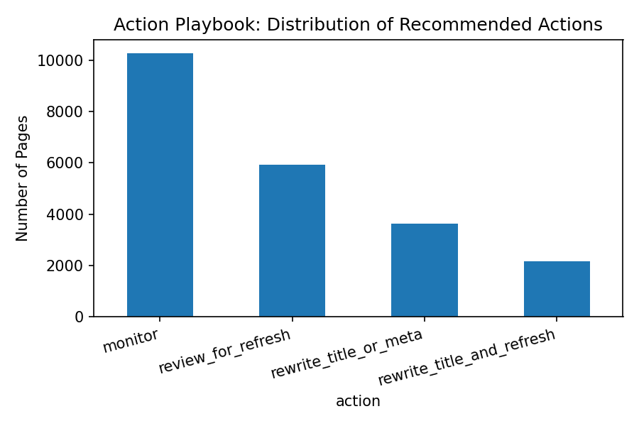

Research paper · FlyRank ML Internship Capstone
30,000 pages · 32 clients · trailing-90-day search metrics
Abstract
FlyRank's content teams already use hand-written flags — like the CTR-fix and refresh flags — to catch underperforming pages, but those flags' assumptions had never been tested against real data. Given limited review capacity, which underperforming search pages should a content team look at first, and do the flags they already rely on actually hold? I built a two-signal ranking rule from validated evidence, trained a random forest on the same features, and compared both under a client-grouped holdout — the honest test, where no client appears in both training and evaluation. The simple rule won: Precision@50 of 0.86 versus the model's 0.76. An earlier in-sample comparison had shown the model winning by a wide margin, which turned out to be an artifact of a random data split that let the model partly memorize clients it would later be "tested" on. The result is a four-tier, reviewer-facing action queue built on the rule that actually generalizes, with every recommendation carrying a reason code and requiring human review before action.
01 — Introduction
A content team maintaining thousands of pages cannot review all of them on a regular cadence. Some pages are quietly losing visibility; others are performing exactly as expected. The question this paper answers is narrow and practical: given a fixed review budget, which pages deserve attention first, and can that ranking be justified with evidence rather than intuition?
This sits in FlyRank's Refresh / Content Opportunity Scoring lane. The unit of analysis is one page. The output is a ranked queue with a reason code per page, intended as decision-support for a human reviewer — not an autonomous system that edits or publishes anything on its own.
FlyRank already runs a workflow flag system for exactly this problem — rules like the CTR-fix flag (comparing a page's click-through rate against its own position tier) and refresh flags (surfacing pages that may be stale). Those flags were the starting point for this capstone, not an afterthought: rather than assume the assumptions behind them were correct, this paper tests them directly against real search data, keeps what the data supports, and narrows what it doesn't. The result is a validated, evidence-backed version of the same reviewer-facing workflow FlyRank's flags already serve — with the added step of showing, honestly, where a plain rule still beats a more complex model.
02 — Data
This paper uses FlyRank's ML internship starter release
(content_refresh_anonymized.csv): 30,000 pseudonymized content rows across 32
clients, each with trailing-90-day search performance metrics. This is the small,
anonymized starter slice, not the full ~79M-row production warehouse — sufficient to
validate real signal and run an honest baseline-versus-model comparison, but not a claim
about FlyRank's complete client base.
Rows
30,000
Clients
32
Window
90d
Rows scored
22,006
No client names, real URLs, or private queries appear anywhere in this study.
03 — Methodology
Rather than assume which signals mattered, two candidate signals — each behind a real FlyRank workflow flag — were tested directly against the data before being built into anything.
Click-through rate drops in a clean, monotonic line from 0.355 at page_1 down
to 0.055 at deep, with solid sample sizes at every tier (533–8,633 rows). This
supports the assumption behind FlyRank's CTR-fix logic: CTR must be judged against its own
position tier, never compared globally.
Decline rate rises from 0.511 (0–30 days) to a peak of 0.611 (91–180 days) — but then reverses at 181+ days, the lowest of all four tiers (0.471). A blanket "older is worse" rule does not hold across the full range, though the reversal rests on small tail buckets (n = 174–175). The final rule folds this in narrowly — the confirmed 91–180 peak only — rather than treating age as linearly predictive.
The label, is_declining_label, marks pages with a downward 90-day trend. This
is a proxy built from the same window as the features, not a genuinely
separate future outcome — named explicitly in the limitations below.
Six leakage-checked features feed the model: content_age_days,
days_since_last_update, impressions_90d, avg_position,
ctr, word_count. The baseline rule combines the two tested
signals into one score — 65% weight on CTR gap versus the page's own tier average, 35%
weight on the confirmed 91–180 aging zone — producing one score, one reason code, and one
action label per page.
Pages were split by client_id using a grouped shuffle split, not a random
split — verified to share zero clients between training and test. This choice was not
incidental: a random split was shown to inflate results substantially (see Results below),
because pages from the same client can share templates and topical patterns that let a
model partly memorize a client it will later be "tested" on.
04 — Results
Both methods were scored on the identical client-grouped holdout, using the same metric — Precision@K, the fraction of the top K ranked pages that were genuinely declining.
| Method | Precision@20 | Precision@50 |
|---|---|---|
| Baseline — two-signal rule | 0.90 | 0.86 |
| Random forest — 6 features | 0.65 | 0.76 |

Why this reverses an earlier result: an initial in-sample comparison, using a random (non-grouped) split, showed the model winning by a wide margin (Precision@50 0.740 vs. baseline 0.240). That comparison is not reported as a finding here — it was an artifact of client leakage across the random split, not a real result. The client-grouped number above is the one that reflects performance on genuinely unseen clients.
Permutation importance on the client-grouped model shows content_age_days
(0.028), ctr (0.021), and avg_position (0.020) carrying most of
the real signal. Notably, days_since_last_update — the exact feature behind
the baseline's aging signal — shows negative importance (−0.015), contributing
noise rather than signal to the model. Out of 4,610 held-out rows, the model produced 1,061
false positives and 841 false negatives — real, meaningful disagreement on unseen clients,
not a rounding error.
05 — Limitations & honest framing
06 — Ranked recommendations
The validated baseline rule was expanded into four distinct actions, so a reviewer can prioritize by which specific problem a page has rather than working through one flat list.

A reviewer should check: whether the page's real intent is navigational (a low CTR isn't always a content problem); whether a SERP feature change explains the shift; whether a sibling page absorbed the traffic; and whether review capacity actually allows working through more than the very top of the queue.
Automatically editing or publishing content without review. Claiming a page will recover if refreshed. Treating "monitor" as a guarantee of health. Sharing pseudonymized IDs outside the organization without the same handling discipline applied here.
07 — Reproducibility
The full track is public — framing, data contract, signal audit, baseline, model, honest validation, and this capstone, in order.